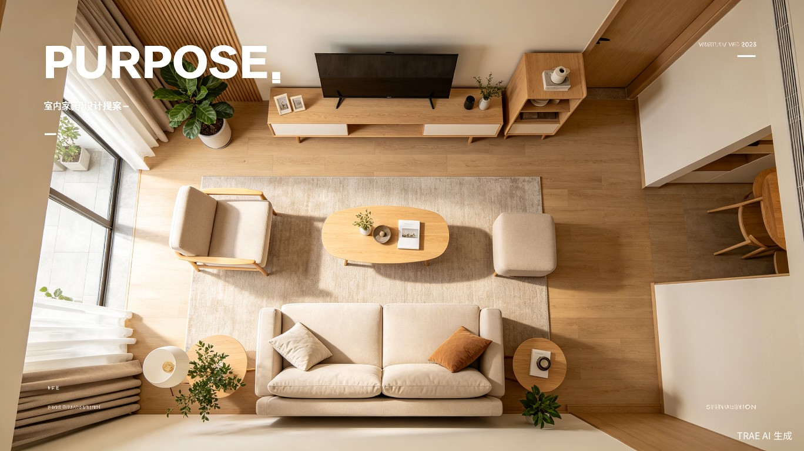
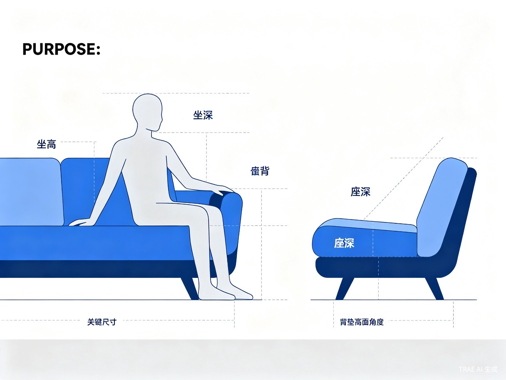
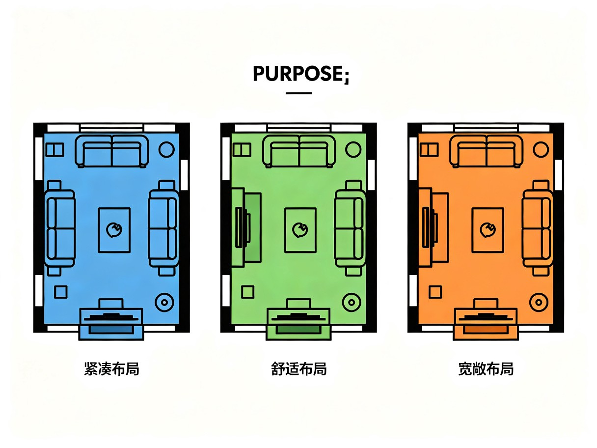

一键生成家具平面摆置图 · 智能人体工学匹配 · 多方案布局推荐
本项目旨在打造一款室内简易家具布局设计工具，核心解决用户在装修或 rearrange 家居空间时面临的两大痛点：一是不知道如何科学摆放家具，二是难以判断家具尺寸是否与自身体型匹配。通过输入用户身高、体重等基础信息，系统可智能推荐合适的家具尺寸，并一键生成多种合理的平面布局方案。
选择房间类型与面积，系统自动生成沙发、床、茶几等家具的平面摆置图
根据用户身高体重，计算最佳坐高、坐深、床长等关键尺寸，确保舒适度
同时生成 3-5 种不同风格的布局方案，支持切换对比，一键导出
用户只需输入房间的基本信息（类型、长宽、门窗位置），系统即可基于内置的家具布局算法，在数秒内生成完整的平面摆置图。支持的家具类型包括：
系统内置人体工学数据库，根据用户输入的身高、体重、年龄、性别等信息，计算以下关键适配指标：
| 家具类型 | 匹配维度 | 计算依据 | 舒适度评级 |
|---|---|---|---|
| 沙发 | 座高、座深、靠背高度 | 小腿长度、大腿长度、坐姿肩高 | 优秀 / 良好 / 一般 / 不合适 |
| 床 | 床长、床宽、床垫硬度 | 身高、肩宽、体重(BMI) | 优秀 / 良好 / 一般 / 不合适 |
| 餐桌椅 | 桌高、椅高、桌面深度 | 坐姿肘高、大腿厚度 | 优秀 / 良好 / 一般 / 不合适 |
| 书桌 | 桌面高度、腿部空间 | 坐姿膝高、大腿厚度 | 优秀 / 良好 / 一般 / 不合适 |

系统不会只给出一个答案，而是基于房间特征和用户需求，生成多种风格的布局方案供用户选择：
最大化利用空间，适合小户型，动线简洁
节省空间平衡空间利用与舒适度，适合大多数家庭
推荐方案强调开阔感，家具间距大，适合大户型
豪华体验
整个设计流程简洁直观，用户可在 3 分钟内完成从输入到获取方案的全过程：
选择房间类型，输入长宽尺寸，标注门窗位置
填写身高、体重、年龄等基础信息
勾选需要的家具类型，设置风格偏好
一键生成多组布局，查看人体工学匹配报告
flowchart LR
A[输入房间信息] --> B[录入身高体重]
B --> C[选择家具类型]
C --> D[智能算法计算]
D --> E[生成布局方案]
E --> F[人体工学评估]
F --> G[导出/分享]
前端采用 React + TypeScript 构建，使用 Canvas 2D / Fabric.js 实现家具拖拽与平面图的实时渲染。用户可自由调整家具位置，系统实时检测碰撞与间距合规性。
布局引擎基于遗传算法 + 约束满足问题（CSP）求解，综合考虑以下约束条件：
系统基于中国成年人人体尺寸标准（GB/T 10000-1988）及国际人体工学数据，建立回归模型：
座高推荐 = 小腿长 × 0.95 - 鞋跟高（约 2-3cm），通常范围 38-45cm
座深推荐 = 大腿长 - 臀部后倾余量（约 5-8cm），通常范围 45-55cm
床长推荐 = 身高 + 20-30cm（枕头与脚部余量），通常 ≥ 身高 + 20cm
从输入到生成完整布局方案仅需 3-5 秒，无需等待
不仅考虑空间，更结合用户体型数据，真正做到"量身定制"
Web + 小程序 + App 全平台覆盖，随时随地设计家居
平面图一键切换 3D 视角，沉浸式体验未来家的样子
布局方案中的家具可直接跳转电商平台，所见即所买
支持多成员体型数据录入，为全家人找到最舒适的方案
本提案提出的室内简易家具布局设计工具，将复杂的空间设计问题转化为简单的几步操作，让普通用户也能轻松获得专业级的家具布局方案。通过结合人体工学数据与智能算法，系统不仅解决了"怎么摆"的问题，更回答了"是否合适"的核心关切。
未来可进一步扩展的方向包括：引入 AR 实景摆放预览、接入智能家居设备布局、支持户型图自动识别、以及基于 AI 的风格推荐等。我们相信，这款工具将成为每个家庭装修和改造时的必备助手。